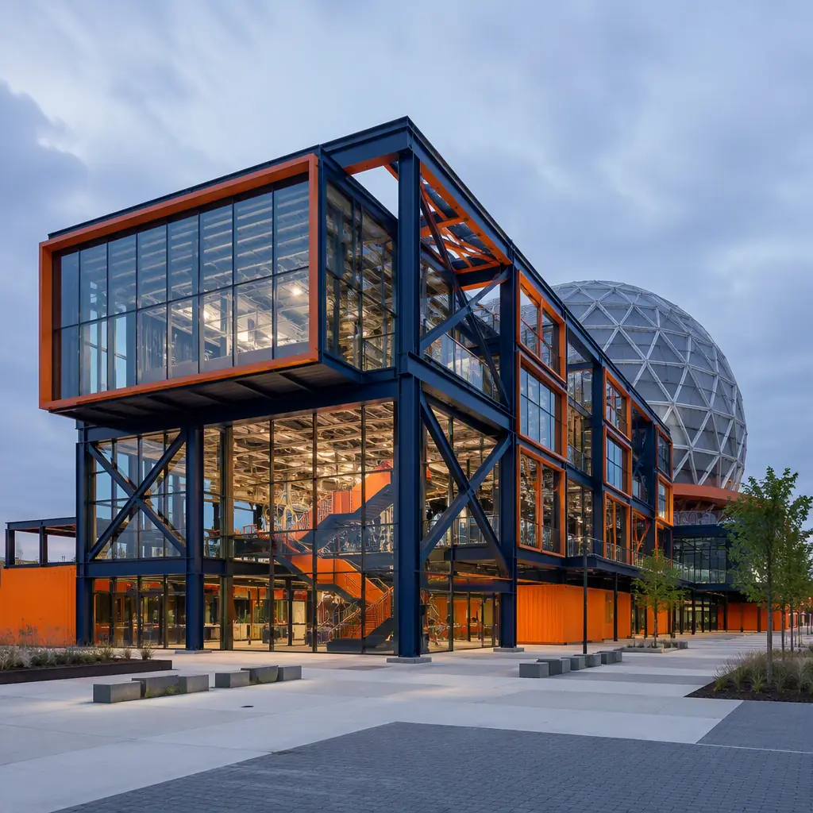
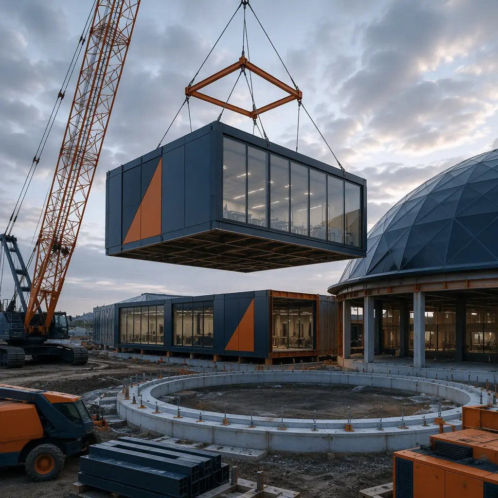
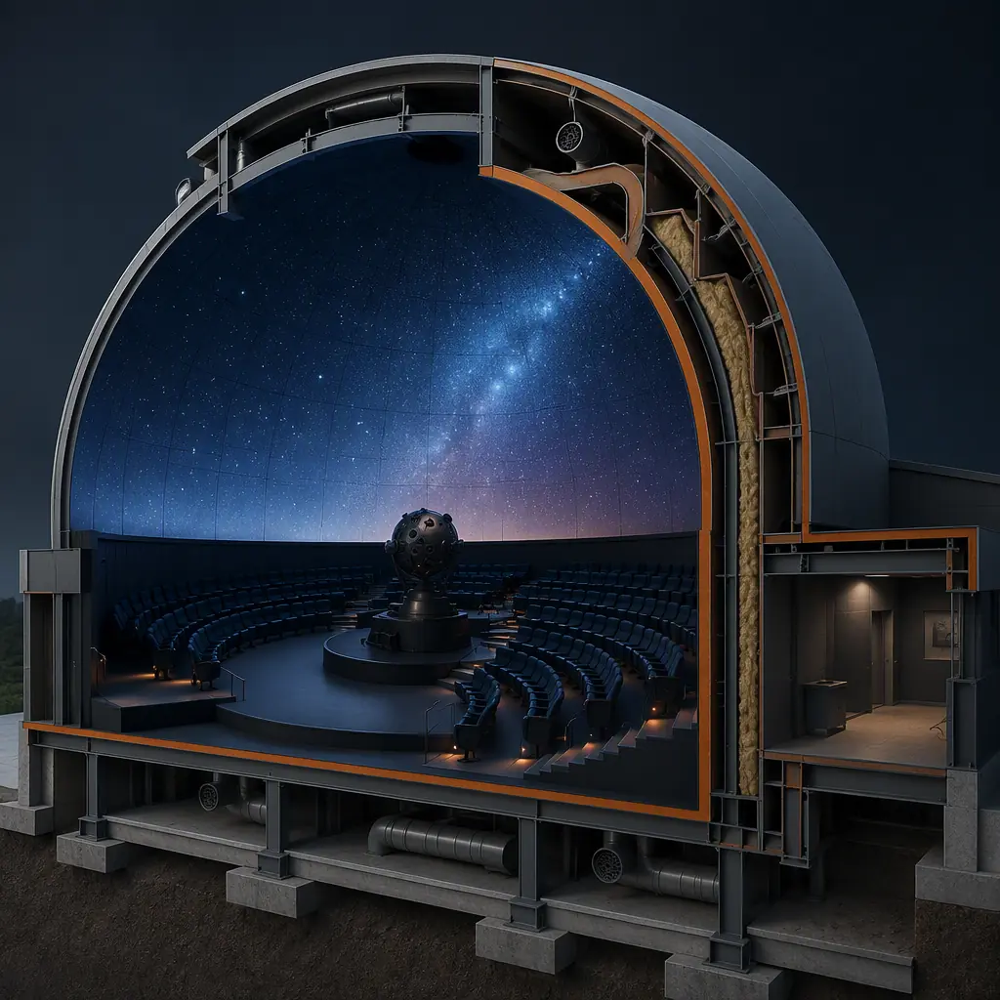
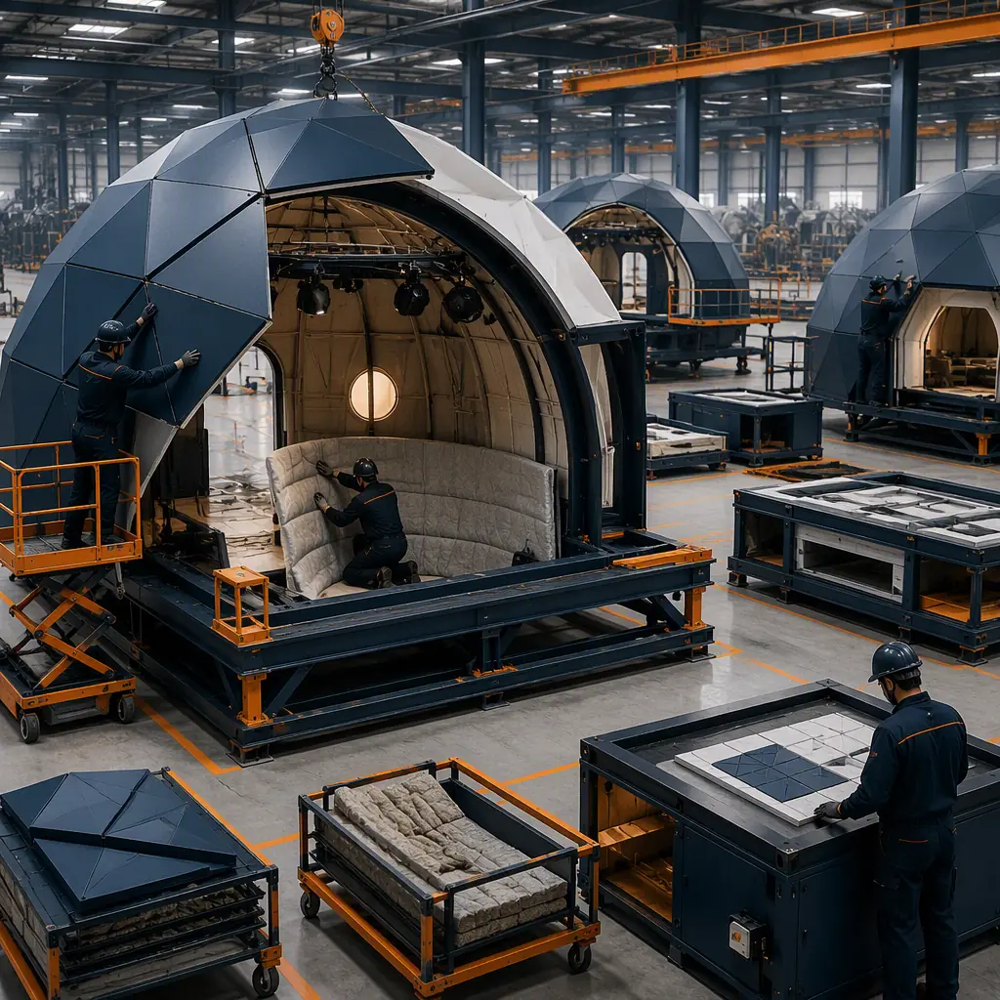

Science centers and planetariums sit at the intersection of public architecture and precision engineering: they must inspire millions of visitors with dramatic column-free spaces, yet they house the most demanding environmental systems in civic construction — acoustically isolated dome theaters, humidity-stable exhibit halls, and projection surfaces measured in thousandths of an inch. They are also, overwhelmingly, public projects funded by bonds, grants and donations, which means the schedule and the budget are fixed before the design starts. Modular prefabricated construction answers both pressures. A science center's exhibit hall is a clear-span steel structure — the same structural language as a factory-built aircraft hangar or convention hall — and a planetarium dome is a precision enclosure that can be manufactured in a controlled factory environment to tolerances that are difficult to achieve with field-built framing. A 30,000–50,000 sq ft science center with a 60-ft dome theater can be delivered in 11–15 months from design freeze, versus 24–36 months conventionally — often the difference between opening for a planned funding cycle and losing it. The engineering lineage runs through our modular observatory buildings and modular museum and archival storage guides. This guide covers exhibit hall design, planetarium dome engineering, museum-grade climate control, supporting program, phasing for live venues, cost structure, and procurement for public owners.

Why Science Venues Fit Factory Construction
Three characteristics make science centers unusually well suited to modular delivery:
- Clear-span structural repetition. Exhibit halls, theaters and galleries are column-free volumes; a factory can weld and assemble the long-span steel frames with jig-controlled accuracy, delivering camber and tolerances that field erection struggles to match. The structural logic mirrors the clear-span engineering we document for modular convention and event centers.
- Precision environments. Planetarium projection, exhibit conservation and acoustics all demand controlled conditions. Factory fabrication puts the dome surface, acoustic lining and HVAC systems under measurement from day one rather than after the roof is on.
- Public-sector schedule certainty. Bond-funded projects face hard expiration dates. The schedule-certainty argument — the same one we make for modular K-12 schools and modular university buildings — is what keeps a funding cycle alive.
Exhibit Halls — Column-Free Space at Scale
The exhibit hall is the center's main volume: typically 15,000–40,000 sq ft of column-free floor with 24–40 ft ceilings, designed to accept heavy exhibits — a 40-ft dinosaur skeleton, a full-size aircraft, interactive installations with structural frames of their own. Modular steel frames deliver these spans using factory-fabricated trusses and rafters, with floor loading designed for 100–150 psf in exhibit zones versus the 50–60 psf of a typical commercial building. The hall's infrastructure is equally demanding: power and data distribution in the floor grid, theatrical lighting rails in the ceiling, rigging points for suspended exhibits, and HVAC sized for high-occupancy crowds of 50–100 people per 1,000 sq ft. All of it — steel frame, roof, cladding, MEP distribution, rigging grid — is installed and tested in the factory, then the hall arrives on site as large clear-span modules that are bolted together and weather-sealed. The same large-span factory logic is documented in our modular stadiums and arenas guide.

Planetarium Domes — Geometry, Acoustics & Thermal Stability
The planetarium is the most precision-critical building in the program. A modern digital planetarium projects onto a dome 40–80 ft in diameter, and the dome surface must be geometrically accurate to within a few millimeters, acoustically isolated so ambient noise never reaches the audience, and thermally stable so air currents do not distort the projection. Factory fabrication addresses all three. Dome panels are precision-formed in the factory, shipped nested, and assembled onto the module frame with alignment fixtures — the same tolerance discipline we document for observatory enclosures. The acoustic package — mass-loaded walls, floating floor, isolated dome support — is installed in the factory where its performance can be measured before the building ships. And the HVAC strategy, which must deliver a silent, draft-free environment (typically NC-25 or lower background noise), is engineered as part of the module rather than retrofitted on site. For institutions planning a planetarium as part of a larger science center, the dome module and the exhibit hall are designed as coordinated structures on a shared foundation plan.
Museum-Grade HVAC & Environmental Control
Exhibits impose conservation-grade environmental requirements: relative humidity held in the 40–55% band, temperature stability within a few degrees, filtration that protects artifacts from particulates, and low-velocity air distribution that does not damage delicate installations. These are the same standards we engineer for archival storage facilities and modular HVAC and indoor air quality systems. Factory-built modules make the environmental system measurable before occupancy: the air handler, humidifier, filtration and controls are installed, commissioned and performance-verified in the factory, with sensor data logged during the pre-shipment run. On site, the modules connect to a shared plant — or, for smaller centers, carry their own packaged plant — and the zones are re-validated during commissioning. The commissioning discipline is covered in our modular building commissioning and handover guide.

Supporting Program — Lobbies, Classrooms, Labs & Admin
A science center is more than its big volumes. The supporting program — a 5,000–10,000 sq ft lobby with ticketing and retail, classrooms and workshop labs for school programs, a demonstration theater, staff offices, and back-of-house receiving and storage — is standard commercial modular construction, delivered as conventional modules with the same quality and speed as the hall. The lobby and classrooms are often the first modules installed, allowing the center to open its education programs while the exhibit hall and dome are completed in a second phase. The classroom and lab program follows the same logic we document for modular school construction, and the phasing strategy follows modular additions and expansions.
Phasing for Live Venues
Many science centers expand in place, adding a planetarium wing or a new exhibit hall to a building that stays open. Modular delivery is uniquely suited to this because the new structure is built off-site and the on-site work — foundations, utility tie-ins, and a concentrated crane campaign — is compressed and schedulable around public hours. A dome theater addition, for example, can be delivered with its structure, dome surface, acoustic package and projection infrastructure factory-complete, then set and commissioned in a 6–10 week on-site window, with the existing center operating throughout. The structural interface — tying the new module to the existing building, coordinating roof and envelope continuity — is engineered in the factory with the existing building's as-built drawings, the same retrofit discipline we document in modular additions and expansions and modular hospital expansions in active facilities.
Interactive Exhibits & Theatrical Systems
Modern science centers are as much production venues as museums: immersive exhibits, large-format theaters, and interactive installations depend on theatrical infrastructure — distributed power and data grids in the floor, rigging and hoists for suspended exhibits and lighting, A/V racks, and show-control networks that coordinate media across a gallery. Factory-built modules carry this infrastructure naturally because the grid is installed in the wall and floor cavities during production, with capacity planned for exhibits that will be specified after the building contract is signed. The theatrical-systems density of an exhibit hall follows the same engineering we document for modular film and sound stage construction, and the high-density A/V and control environments mirror the technology venues in our modular esports arenas guide. Because the infrastructure is installed and tested in the factory, a museum's exhibits team can begin installation the week the building arrives — the exhibit fit-out and the building fit-out run in parallel rather than in sequence, a schedule advantage that often compresses the overall project by several months.
Site Logistics for Large Clear-Span Modules
The clear-span exhibit hall and dome structures arrive as the largest modules in the modular industry — wide loads that demand route planning, pilot cars and, in some jurisdictions, off-peak transport windows. The logistics plan is engineered before production: module dimensions are fixed to road-legal limits, transport routes are surveyed for bridge and turning clearances, and the site's crane strategy is planned for the heaviest lifts, typically the dome sections and the hall's long-span roof assemblies. The same transport and crane engineering we document for modular transportation logistics and modular crane logistics applies, scaled to wide loads. For urban or campus sites, the ability to deliver and set the structure in a concentrated campaign — rather than months of field erection — is often the decisive advantage, because it compresses the disruption to the surrounding neighborhood or institution into a matter of weeks.
Cost Structure — Modular vs. Conventional Science Venue
| Venue Program | Conventional | Modular |
|---|---|---|
| 60-ft planetarium dome theater (standalone) | $7.5–11M / 18–26 months | $6.0–8.8M / 9–13 months |
| 30,000 sq ft science center (hall + lobby + classrooms) | $22–34M / 24–36 months | $18–27M / 11–15 months |
| Exhibit-hall wing addition (15,000 sq ft, live venue) | $11–17M / 16–24 months | $8.8–13.5M / 7–10 months |
| Museum-grade HVAC + conservation control package | $1.8–2.8M field-installed | $1.4–2.2M factory-installed, pre-commissioned |
The 15–20% capital saving is amplified for public owners by the funding-cycle benefit: a center delivered in one bond term instead of two saves financing costs and opens revenue years earlier. For the full cost methodology, see our 2026 modular construction cost guide.

Procurement for Municipal & Nonprofit Owners
Science centers are typically procured by public authorities, universities, or nonprofit boards — owners who live or die by procurement compliance. Modular delivery fits public procurement cleanly: the building can be specified performance-based (span, loading, acoustics, environmental band) and bid by qualified manufacturers, with the same bonding, insurance and inspection structures as conventional construction. The documentation trail — factory QC records, material certifications, environmental validation data — satisfies public oversight requirements and, for grant-funded projects, the reporting obligations of the funding agency. The procurement path is covered in detail in our modular RFP procurement guide, and the institutional delivery experience is documented across our modular government buildings series.
Is Modular Right for Your Science Venue?
Modular delivery creates the strongest value for new science centers and planetariums on fixed funding timelines, dome theater additions to operating museums, exhibit-hall expansions where the venue must stay open, and institutions that need museum-grade environmental performance documented and verifiable from day one. If your project is in the concept phase, the structural, acoustic and environmental engineering decisions that determine whether factory delivery fits — span, dome diameter, HVAC strategy, site logistics — are best made before the RFP is written. The same precision-enclosure engineering we apply to observatory buildings and aquarium and marine park venues is available to your team from the first planning meeting.
Planning a science center, planetarium or exhibit-hall expansion? Request our education-venue documentation package — clear-span exhibit hall specifications, dome theater acoustic and environmental data, and funding-cycle schedule case studies. Contact the MODURA engineering team.